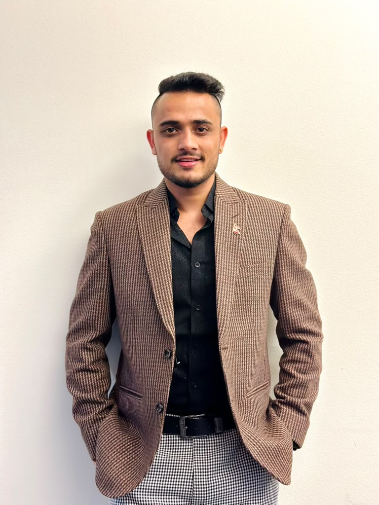

Chief Executive Officer (CEO)
Prakash Joshi
Prakash Joshi is an entrepreneur, strategist, and research-driven leader focused on intelligence, innovation, and sustainable growth. As CEO of Aartha Axis, he blends business intelligence, technology, analytics, and strategic marketing to help businesses make smarter decisions and build lasting market impact. Alongside his entrepreneurial journey, he is pursuing a PhD in Environmental & Sustainable Engineering in New York, USA, bringing a unique perspective shaped by research, systems thinking, and innovation.
prakashjoshi@aarthaaxis.com